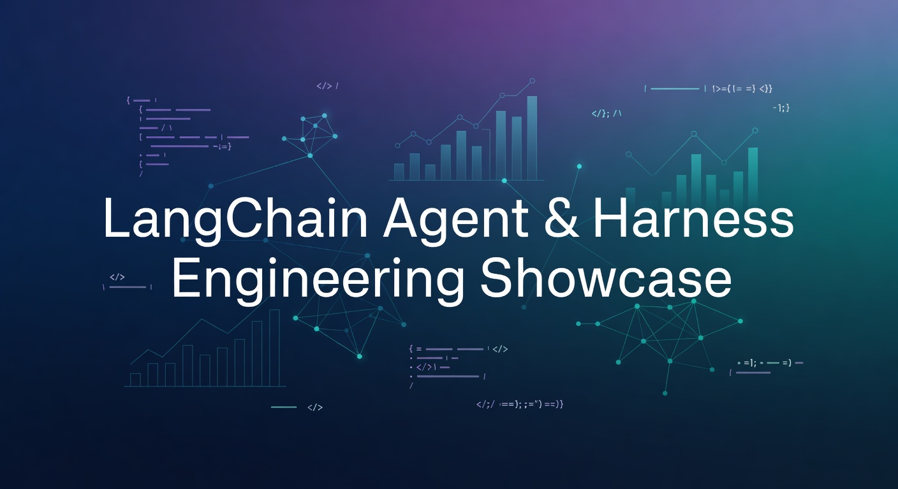

10 production-grade tutorials that teach you how to build reliable, observable, and testable agent systems with LangChain.
Most LangChain content stops at “here’s a working agent.” This showcase is different. It teaches you how to build agents you can actually trust in production.
Ordered for maximum learning. Do them sequentially.